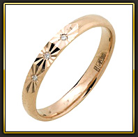

Пример текстовой страницы
 Мировоззрение — это система взглядов на объективный мир и место в нем человека, на отношение человека к окружа ущей его действительности и к себе, а также обусловленные этими взглядами основные жизненные убеждения, идеалы, принципы познания и деятельности, ценностные ориентации. Мировоззрение — это интегральное образование. В его сос тав входят обобщенные знания: как повседневные жизнен но-практические, так и профессиональные, научные. Чем салиднее запас знаний в ту или иную эпоху, у того или иного народа или отдельного человека, тем более серьезную опору может получить соответствующее мировоззрение.
В мировоззрении осмысливается весь уклад человеческой жизни, выражаются определенные системы ценностей, выстраиваются «образы» прошлого и «проекты» будущего, получают одобрение или осуждение те или иные способы жизни, поведения. Мировоззрение — это комплексная форма сознания, объемлющая самые разные «пласты» человеческого опыта. Мировоззрение способно раздвигать узкие рамки повседневности, конкретного места и времени, соотносить данного человека с другими людьми, включая и тех, что жили раньше и будут жить потом. В мировоззрении накапливается опыт уяснения смысловой основы человеческой жизни, новые поколения людей приобщаются к духовному миру прадедов, дедов, отцов, современниеов, что-то бережно храня, от чего-то решительно отказываясь. В зависимости от того, что решается вопрос о соотношении духа и материи, мировоззрение может быть идеалистическим и материалистическим, религиозным или атеистическим.
С нравственно-психологической точки зрения мировоззрение может характеризоваться как оптимистическое или пессимистическое. Понятие мировоззрение употребляется и в более узком понимании: выделяются философское, политическое, художественное мировоззрение, а также врачебное, физическое и.т.д. В классовом обществе могут выделяться феодальное, буржуазное, мелкобуржуазное, крестьянское, пролетарское мировоззрение.